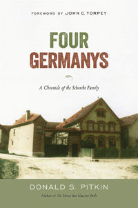

<body bgcolor="#FFFFFF" text="#000000" link="#0000FF" vlink="#CC0000" alink="#CC0000"><center><hr width="350" size="1" align="center" noshade>Charting the transformation of East Germany through the lens of one town and one multi-generational family<hr width="350" size="1" align="center" noshade><p><a href="https://cdcshoppingcart.uchicago.edu/Cart/ChicagoBook.aspx?ISBN=&&PRESS=temple" target="_top">Buy this book!</a> | <a href="https://cdcshoppingcart.uchicago.edu/Cart/Cart.aspx?PRESS=temple" target="_top">View Cart</a> | <a href="https://cdcshoppingcart.uchicago.edu/Cart/Cart.aspx?PRESS=temple" target="_top">Check Out</a></p><p></p></center><!--none//--><h1 class = "booktitle">Four Germanys</h1> <h1 class = "subtitle">A Chronicle of the Schorcht Family</h1>
<h3>Donald S. Pitkin</h3>
paper: $34.95, Sep 16<BR>EAN:&nbsp;978-1-4399-1343-7<BR><font color=#990033>Available</FONT><font size=-7><br>&nbsp;</font></p><p class="info">cloth: $94.50, Sep 16<BR>EAN:&nbsp;978-1-4399-1342-0<BR><font color=#990033>Available</FONT><font size=-7><br>&nbsp;</font></p><p class="info">e-book: $34.95, Oct 16<BR>EAN:&nbsp;978-1-4399-1344-4<BR><font color=#990033>Not Yet Published Preorder</FONT><font size=-7><br>&nbsp;</font></p></p></td></tr></table>
<BR> <p class="info">316 pp<BR> 6 x 9<BR> <p class="info"><font size=-7>&nbsp;</font></p><p class="info">
</P><BLOCKQUOTE><p>
<i>"</i>Four Germanys<i>&nbsp;is a real page-turner.&nbsp;Pitkin&nbsp;presents the social transformation of what is now eastern Germany through several major regime changes. He offers a masterful blend of oral history, secondary history, and archival data analysis that illuminates the relationship between local and macro-events. Pitkin's balanced ethnographic account of the County of Weimar, home to the Schorcht family, is a revealing examination of the texture of rural life outside the urban centers. This is an important case study.</i>"-<b>Jane Schneider</b>, Professor Emerita of Anthropology at the Graduate Center, City University of New York
<br></BLOCKQUOTE>
<p>
In this last book by the late Donald Pitkin, author of <i>The House that Giacomo Built</i>, comes a story of the Schorcht family, through whose fortunes and struggles one can see the transformations of Germany through the long twentieth century.<br>
<p>Each chapter of <i>Four Germanys</i> is reflective of generational rather than historical time. In 1922, Edwin Schorcht inherited his family farm, and in Part One, Pitkin traces the derivation of this farmstead. Part Two focuses on Schorcht's children who came of age in Hitler's Germany. Part Three has the Schorchts growing up in the Ulbricht years (1950-73) of the German Democratic Republic. The book concludes with the great-granddaughter, Maria, looking back to the past in relation to the new Germany that history had bequeathed her.<br>
<p>Ultimately, <i>Four Germanys</i> reflects the impact of critical historical events on ordinary East Germans while it also reveals how one particular family managed its own historical adaptation to these events.
<br>
<P CLASS="top"><A HREF="#top">BACK TO TOP</A></P>&nbsp;<h2 class="inpageheading"><A NAME="excerpt"></a>Excerpt</h2><p>
Read the Prologue and the Introduction (pdf).
<br>
<P CLASS="top"><A HREF="#top">BACK TO TOP</A></P>
<BR>&nbsp;
<h2 class="inpageheading"><A NAME="reviews"></a>Reviews</h2>
<p>
<i>"With his quotidian focus, Pitkin draws out rich details as he relates small-scale personal events to a larger historical canvas to take the reader through Germany's Nazi, Communist, and unified capitalist periods. A very readable, insightful examination of how people in rural East Germany lived through decades of dramatic change,</i> Four Germanys<i> offers a very fresh and welcome perspective to readers interested in the social and political transformations of Europe in the twentieth century</i>."-<b>David Kertzer</b>, Dupee University Professor of Social Science and Professor of Anthropology and Italian Studies at Brown University
<br>
<P CLASS="top"><A HREF="#top">BACK TO TOP</A></P>&nbsp;<P>
<h2 class="inpageheading"><A NAME="contents"></a>Contents</h2><P><SPAN STYLE="font-family: 'Verdana';font-size: 13px;" >Foreword, by John C. Torpey<BR>Acknowledgments<BR><BR>Prologue: Locating Weimar, G&ouml;ttern, and a Family<BR>Introduction<BR><BR></SPAN><SPAN STYLE="font-family: 'Verdana';font-size: 13px;font-weight: bold;" >PART I</SPAN><SPAN STYLE="font-family: 'Verdana';font-size: 13px;" > <BR>1. Edwin and Elly<BR>2. The Lay of the Land<BR>3. Farming<BR>4. The Farmstead<BR><BR></SPAN><SPAN STYLE="font-family: 'Verdana';font-size: 13px;font-weight: bold;" >PART II<BR></SPAN><SPAN STYLE="font-family: 'Verdana';font-size: 13px;" >5. Edgar and Irmgard<BR>6. National Socialism<BR>7. Edgar at War<BR>8. American Occupation, Russian Occupation: Edgar and Wally's Wedding, 1948<BR>9. Land Reform, 1945-1949<BR>10. Irngard Defects to the West<BR>11. Collectivization of the Land, LPG I<BR>12. Edgar Becomes Mayor: Collectivization, LPG III<BR>13. The Mayoralty of Edgar Schorcht, 1965&ndash;1987<BR>14. From Stables to Apartments<BR><BR></SPAN><SPAN STYLE="font-family: 'Verdana';font-size: 13px;font-weight: bold;" >PART III<BR></SPAN><SPAN STYLE="font-family: 'Verdana';font-size: 13px;" >15. Erhard and Heidrun Schorcht<BR>16. The University<BR>17. Heidrun in America<BR>18. Heidrun's Metamorphosis from a Cold War Kid<BR><BR></SPAN><SPAN STYLE="font-family: 'Verdana';font-size: 13px;font-weight: bold;" >PART IV<BR></SPAN><SPAN STYLE="font-family: 'Verdana';font-size: 13px;" >19. Maria Schorcht<BR>Conclusion<BR><BR>Notes<BR>Index</SPAN></P>
<P CLASS="top"><A HREF="#top">BACK TO TOP</A></P>
</P><BR>&nbsp;
<H2 class="inpageheading"><A NAME="author bio"></a>About the Author(s)</H2><p>
<b>Donald S. Pitkin </b>(1922-2012) was Professor Emeritus of Anthropology at Amherst College and Founder of the Anthro-Sociology Department. He was the author of <i>The House that Giacomo Built: History of an Italian Family, 1898-1978.</i>
<br>
<P CLASS="top"><A HREF="#top">BACK TO TOP</A></P>
<p><h2 class="inpageheading"><A NAME="subjects"></a>Subject Categories</h2><P><A HREF="/tempress/anthropology.html" TARGET="_top">Anthropology</a><BR><P><A HREF="/tempress/history.html" TARGET="_top">History</a><BR><P><A HREF="/tempress/sociology.html" TARGET="_top">Sociology</a></P></P>
</p>
<P>
<h2 class="inpageheading">In the Series</h2>�
<p>�<a target="_top" href="http://www.temple.edu/tempress/phsc.html" OnMouseOver="window.status='Click for other books in this series!';return true;"OnMouseOut="window.status=" ><i>Politics, History, and Social Change</i></a></P>
<p><p>
This series will disseminate serious works that analyze the social changes that have transformed our world during the twentieth century and beyond. The main topics to be addressed include international migration; human rights; the political uses of history; the past and future of the nation-state; decolonization and the legacy of imperialism; and global inequality. The series will also translate into English outstanding works by scholars writing in other languages.
<br />
</p></P>
�</P>��
</P>
<p align="center"><a href="https://cdcshoppingcart.uchicago.edu/Cart/ChicagoBook.aspx?ISBN=&&PRESS=temple" target="_top">Buy this book!</a> | <a href="https://cdcshoppingcart.uchicago.edu/Cart/Cart.aspx?PRESS=temple" target="_top">View Cart</a> | <a href="https://cdcshoppingcart.uchicago.edu/Cart/Cart.aspx?PRESS=temple" target="_top">Check Out</a></p><p><font face="Arial" size="1"><a href="copyright.html" onMouseOver="window.status='Web Copyright Policy';return true;" onMouseOut="window.status=''" title="Web Copyright Policy">&copy;</a> 2016 <a href="http://www.temple.edu" target="new" onMouseOver="window.status='Link to Temple University home page';return true;" onMouseOut="window.status=''" title="Link to Temple University home page">Temple University</a>. All Rights Reserved. http://www.temple.edu/tempress/titles/2398_reg.html</font></p>